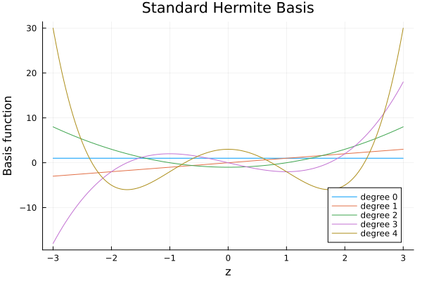
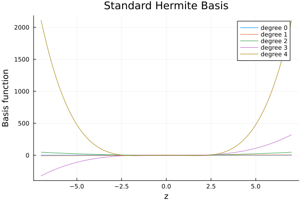
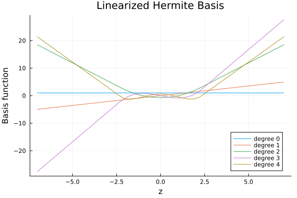
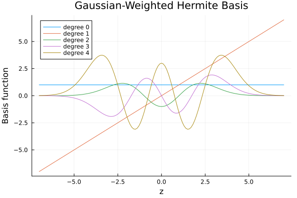
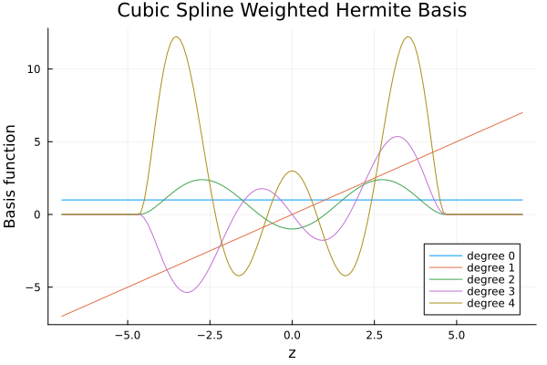

Basis Functions
In order to construct a parameterized map, we first need to define a suitable basis.
This manual describes the different one-dimensional basis families currently implemented in TransportMaps.jl. We focus on variants of the (probabilists') Hermite polynomials and recently proposed edge-controlled versions [3], [2].
Probabilistic Hermite Basis
The probabilistic Hermite polynomials form an orthonormal basis with respect to the standard normal density
\[\phi(z) = \frac{1}{\sqrt{2 \pi}} \exp\left(-\frac{z^2}{2}\right)\]
They satisfy the three-term recurrence $\operatorname{He}_{n+1}(z)=z \operatorname{He}_n(z)-n \operatorname{He}_{n-1}(z) $ with $(\operatorname{He}_0(z)=1)$ and $(\operatorname{He}_1(z)=z)$.
Orthonormal polynomial bases such as the Hermite family are useful for several reasons. Orthogonality with respect to a reference measure makes coefficient estimation stable: projections onto the basis are simple inner products and a truncated series gives the best $L^2$-approximation under that measure. These properties are the same reasons orthogonal polynomials are used in Polynomial Chaos Expansions (PCE) for surrogate modelling and uncertainty quantification (see Sudret [9] for a concise introduction). In the Gaussian case the Hermite polynomials are the natural choice (Wiener–Askey scheme, see [10]).
We want to visualize the Hermite polynomials, first we load the necessary packages:
using Distributions
using Plots
using TransportMapsThen we construct the basis via HermiteBasis() or HermiteBasis(:none) (:none means no edge control):
basis = HermiteBasis()
z = -3:0.01:3
p1 = plot(xlabel="z", ylabel="Basis function", title="Standard Hermite Basis")
for degree in 0:4
plot!(p1, z, map(x -> basisfunction(basis, degree, x), z), label="degree $degree")
end
If we zoom out, we can see that the tails grow quickly for large $|z|$:
z = -7:0.1:7
p2 = plot(xlabel="z", ylabel="Basis function", title="Standard Hermite Basis")
for degree in 0:4
plot!(p2, z, map(x -> basisfunction(basis, degree, x), z), label="degree $degree")
end
Linearized Hermite Basis
Linearized Hermite polynomials (edge-linearized basis) were introduced in [3] to control growth for large $|z|$ by replacing the polynomial with a tangent line outside data-dependent bounds $z^l,z^u$:
\[\mathcal{H}^{\mathrm{Lin}}_j(z)=\frac{1}{\sqrt{Z_{\alpha_j}}} \begin{cases} \mathrm{He}_j(z^l)+\mathrm{He}'_j(z^l)(z-z^l), & z< z^l \\ \mathrm{He}_j(z), & z^l\le z \le z^u \\ \mathrm{He}_j(z^u)+\mathrm{He}'_j(z^u)(z-z^u), & z> z^u \end{cases}\]
The bounds are chosen here as the 0.01 and 0.99 empirical quantiles of (reference) samples. Alternatively, they can be chosen as the quantiles of the respective reference density. The normalization constant $Z_{\alpha_j}$ follows the definition in the paper: $Z_{\alpha_j}=\alpha_j!$ for $j<k$ and $Z_{\alpha_k}=(\alpha_k+1)!$.
basis = LinearizedHermiteBasis(Normal(), 4, 1)
println("Linearization bounds: ", basis.linearizationbounds)
p3 = plot(xlabel="z", ylabel="Basis function", title="Linearized Hermite Basis")
for degree in 0:4
plot!(p3, z, map(x -> basisfunction(basis, degree, x), z), label="degree $degree")
endLinearization bounds: [-2.326347874040846, 2.326347874040846]
Edge-Controlled (Weighted) Hermite Basis: Gaussian Weight
Edge control modifies each Hermite polynomial with a decaying weight to reduce growth in the tails [2]. Using a Gaussian weight gives:
\[\mathcal{H}_j^{\text{Gauss}}(z)=\mathrm{He}_j(z)\exp\left(-\tfrac{z^2}{4}\right).\]
basis = GaussianWeightedHermiteBasis()
p4 = plot(xlabel="z", ylabel="Basis function", title="Gaussian-Weighted Hermite Basis")
for degree in 0:4
plot!(p4, z, map(x -> basisfunction(basis, degree, x), z), label="degree $degree")
end
In order to preserve some extrapolation properties, the weights are only applied to polynomials of degree $j \geq 2$, as noted in [2].
Edge-Controlled Hermite Basis: Cubic Spline Weight
A cubic spline weight smoothly damps the polynomials outside a radius $r$, also introduced in [2]. In this implementation, we define $r$ based on the 0.01 and 0.99 quantile values $z^l, z^u$:
\[\mathcal{H}_j^{\mathrm{Cub}}(z)=\operatorname{He}_j(z)\left(2 u^3-3 u^2+1\right),\qquad u=\min\!\left(1,\frac{|z|}{r}\right),\; r=2\max(|z^l|,|z^u|).\]
basis = CubicSplineHermiteBasis(Normal())
p5 = plot(xlabel="z", ylabel="Basis function", title="Cubic Spline Weighted Hermite Basis")
for degree in 0:4
plot!(p5, z, map(x -> basisfunction(basis, degree, x), z), label="degree $degree")
end
Summary
We showcased four basis variants:
- Standard (orthonormal) Hermite
- Linearized Hermite (piecewise linear tails)
- Gaussian-weighted Hermite (exponential damping)
- Cubic-spline-weighted Hermite (compact-style smooth damping)
These can be supplied when constructing polynomial transport maps to tune stability, tail behavior, and sparsity characteristics.
This page was generated using Literate.jl.